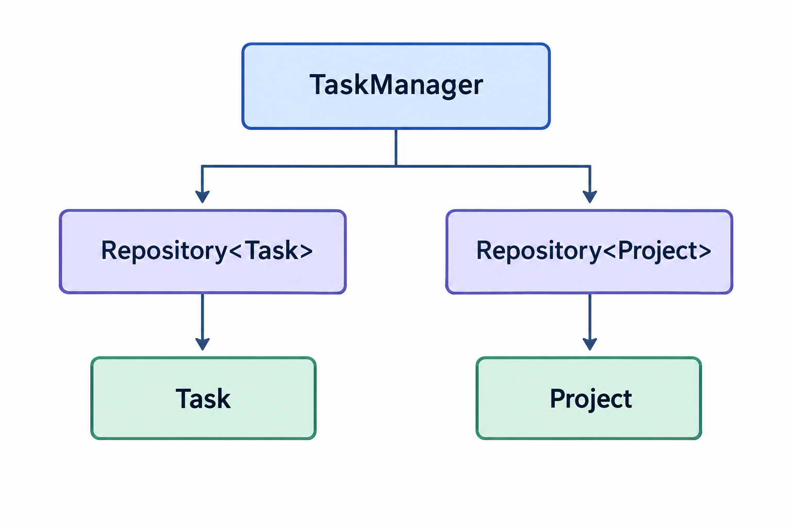

Скачайте подготовленный проект Task Manager. Методы классов Task и TaskManager содержат заглушки и требуют реализации.
Task по приведённой спецификации.TaskManager, обеспечивающий управление задачами и проектами.В лабораторной работе разрабатывается приложение Task Manager — система для управления задачами и проектами. Пользователь может создавать проекты, добавлять в них задачи, редактировать и удалять их, переносить задачи между проектами, а также следить за прогрессом каждого проекта.
Графический интерфейс подготовлен. Основная работа выполняется в классах предметной области.
В предыдущей лабораторной работе задачи и проекты существовали независимо: список задач и список проектов не были связаны. Это приводило к трём проблемам:
В этой работе предметная модель расширяется так, чтобы перечисленные проблемы были устранены. Ключевое изменение — появление связи между задачей и проектом и вытекающих из неё операций.
TaskОписывает одну задачу. Помимо собственных данных хранит признак принадлежности к проекту.
Отвечает за: данные одной задачи.
Repository<T>Обобщённое хранилище объектов одного типа. Предоставляется готовым и изменению не подлежит.
Отвечает за: хранение объектов.
TaskManagerКласс верхнего уровня. Управляет задачами и проектами, поддерживает связь между ними, вычисляет показатели.
Отвечает за: управление задачами и проектами.
Проект содержит готовые графический интерфейс, шаблон Repository<T>, класс Project и заголовочные файлы task.h, taskmanager.h с объявлениями методов. Реализации методов Task и TaskManager отсутствуют.
| Файл | Содержание |
|---|---|
task.h | Поля и объявления методов Task. Изменению не подлежит. |
task.cpp | Заглушки методов Task. |
taskmanager.h | Поля и объявления методов TaskManager. Изменению не подлежит. |
taskmanager.cpp | Заглушки методов TaskManager. |
repository.h | Готовый шаблон Repository<T>. |
project.h/.cpp | Готовый тип Project. |
mainwindow.h/.cpp | Готовый графический интерфейс. |
main.cpp | Точка входа. |

Графический интерфейс взаимодействует с TaskManager. TaskManager использует два экземпляра одного шаблона Repository<T>. Связь между задачей и проектом обеспечивается полем Task.projectId.
Task в Task.cpp по приведённой ниже спецификации.TaskManager в TaskManager.cpp.Для сборки проекта используется CMake. Все необходимые настройки находятся в файле CMakeLists.txt.
Для сборки проекта требуется:
cmake -S . -B build cmake --build build
После успешной сборки запустите приложение TaskManager_FLTK.
TaskТип Task описывает одну задачу и её принадлежность к проекту. По сравнению с предыдущей версией тип получает дополнительное поле и соответствующие методы доступа.
Класс Task должен содержать следующие приватные поля:
id — идентификатор задачи, целое число;projectId — идентификатор проекта, к которому относится задача, целое число; значение 0 означает отсутствие проекта;title — название задачи, строка;description — описание задачи, строка;status — статус задачи, строка;priority — приоритет задачи, строка.status может принимать только значения "Todo", "In Progress", "Done".
priority может принимать только значения "Low", "Medium", "High".
Task.hНиже показаны поля и объявления методов. Строки, отмеченные зелёным, — новые по сравнению с лабораторной №3.
#ifndef TASK_H #define TASK_H #include <string> class Task { private: int id; int projectId; // ← новое поле std::string title; std::string description; std::string status; std::string priority; public: Task(int id, std::string title, int projectId = 0); int GetId() const; int GetProjectId() const; std::string GetTitle() const; std::string GetDescription() const; std::string GetStatus() const; std::string GetPriority() const; void SetProjectId(int projectId); void SetTitle(std::string title); void SetDescription(std::string description); void SetStatus(std::string status); void SetPriority(std::string priority); }; #endif
Task(int id, string title, int projectId = 0)ИЗМЕНЕНОid, title, projectId; установить description в пустую строку; status в "Todo"; priority в "Medium".Task.GetId() constTask существует.id.GetProjectId() constНОВОЕTask существует.projectId.0, если задача не привязана к проекту.GetTitle() constTask существует.title.GetDescription() constTask существует.description.GetStatus() constTask существует.status.GetPriority() constTask существует.priority.SetProjectId(int projectId)НОВОЕ0 — отвязать задачу от проекта.projectId переданным значением.GetProjectId() возвращает переданное значение.SetTitle(string title)title переданным значением.GetTitle() возвращает новое название.SetDescription(string description)description переданным значением.GetDescription() возвращает новое описание.SetStatus(string status)"Todo", "In Progress" или "Done".status новым значением.GetStatus() возвращает переданный статус.SetPriority(string priority)"Low", "Medium" или "High".priority новым значением.GetPriority() возвращает переданный приоритет.TaskManager является классом, через который графический интерфейс работает с задачами и проектами. Он не хранит объекты непосредственно в std::vector, а использует два экземпляра шаблонного репозитория.
taskRepository — объект типа Repository<Task> для хранения задач;projectRepository — объект типа Repository<Project> для хранения проектов;nextTaskId — целое число для идентификатора следующей задачи;nextProjectId — целое число для идентификатора следующего проекта.Project предоставляется в готовом проекте; реализовывать его не требуется.TaskManager.hСтроки, отмеченные зелёным, — новые по сравнению с лабораторной №3.
#ifndef TASKMANAGER_H #define TASKMANAGER_H #include <string> #include <vector> #include "task.h" #include "project.h" #include "repository.h" class TaskManager { private: Repository<Task> taskRepository; Repository<Project> projectRepository; int nextTaskId; int nextProjectId; public: TaskManager(); void AddTask(std::string title, std::string description, std::string priority, std::string status, int projectId); // ← новый параметр void UpdateTask(int index, std::string title, std::string description, std::string priority, std::string status); void DeleteTask(int index); std::vector<Task> GetTasks(); bool MoveTaskToProject(int taskIndex, int projectId); int CountTasksInProject(int projectId); int CountTasksInProjectByStatus(int projectId, std::string status); double CompletionPercent(int projectId); void AddProject(std::string name); void DeleteProject(int index); std::vector<Project> GetProjects(); }; #endif
TaskManager()nextTaskId и nextProjectId в 1. Репозитории пусты.TaskManager.AddTask(string title, string description, string priority, string status, int projectId)ИЗМЕНЕНОpriority — "Low", "Medium" или "High"; status — "Todo", "In Progress" или "Done"; projectId — 0 либо идентификатор существующего проекта.Task с текущим nextTaskId, названием и переданным projectId; увеличить nextTaskId; установить описание, приоритет и статус; добавить задачу в taskRepository.taskRepository; её projectId равен переданному значению.UpdateTask(int index, string title, string description, string priority, string status)index в диапазоне от 0 до GetTasks().size()-1; приоритет и статус имеют допустимые значения.index; изменить название, описание, приоритет и статус; передать изменённую задачу в taskRepository.Update(index, task).id и projectId не изменены; количество задач не изменилось.DeleteTask(int index)index в диапазоне от 0 до GetTasks().size()-1.Remove(index) для taskRepository.GetTasks()GetAll() у taskRepository и вернуть полученный вектор.std::vector<Task> со всеми задачами.MoveTaskToProject(int taskIndex, int projectId)НОВОЕprojectId = 0 означает «отвязать от проекта».taskIndex в диапазоне от 0 до GetTasks().size()-1; если projectId != 0, в projectRepository существует проект с этим идентификатором.taskIndex; при необходимости проверить существование целевого проекта; взять задачу по индексу; установить ей новый projectId; обновить задачу в репозитории.true, если перенос выполнен; false — если индекс некорректен или целевой проект не найден.projectId. Поле id задачи не изменяется. Количество задач и проектов не меняется.CountTasksInProject(int projectId)НОВОЕGetProjectId() равно переданному значению.CountTasksInProjectByStatus(int projectId, string status)НОВОЕGetProjectId() равно переданному значению и GetStatus() совпадает с переданным статусом.CompletionPercent(int projectId)НОВОЕ0.0; иначе вычислить 100.0 · (число задач со статусом "Done") / (общее число задач проекта).0.0 до 100.0.AddProject(string name)Project с текущим nextProjectId и названием name; увеличить nextProjectId; добавить проект в projectRepository.projectRepository.DeleteProject(int index)ИЗМЕНЕНОindex в диапазоне от 0 до GetProjects().size()-1.projectRepository.GetProjects()GetAll() у projectRepository и вернуть полученный вектор.std::vector<Project> со всеми проектами.